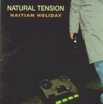

| Artist: | Natural Tension |
| Title: | Haitian Holiday |
| Label: | self produced |
| Length(s): | 43 minutes |
| Year(s) of release: | 2000 |
| Month of review: | [01/2001] |
| 1) | New Year's Eve | 4.47 |
| 2) | Premature Speculation (in Due Time) | 3.18 |
| 3) | Westernrise | 5.29 |
| 4) | Haitian Holiday | 4.15 |
| 5) | The Art Song | 3.07 |
| 6) | Terminal | 5.48 |
| 7) | Under Turnstiles | 3.55 |
| 8) | Most Likely To... | 5.30 |
| 9) | Half Of Nothing | 6.34 |